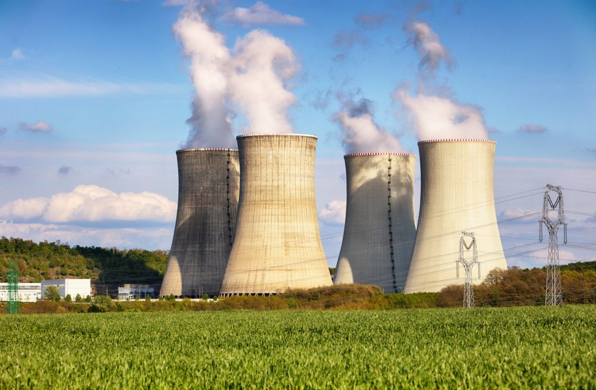

Nuclear
Energia Nuclear ou atômica, como também é conhecida, é a energia que é obtida através da fissão do núcleo do átomo de uranio enriquecido. Essa energia mantém juntas duas partes do núcleo de um átomo que, quando dividido em duas partes, acaba liberando uma grande quantidade de energia.
Em 1938 foram obtidos os primeiros resultados de divisão dos átomos de metais pesados como o uranio e o plutônio. No começo, essa energia tinha fins militares, mais tarde, muitas pesquisas avançam e o intuito muda para a produção de energia elétrica.
O país que lidera atualmente a produção de Energia Nuclear é os Estados Unidos, mas, países como: França, Bélgica, Finlândia e Suécia são os mais dependentes.
Aqui no Brasil, por volta do final da década de 60, o governo começa a desenvolver o Programa Nuclear Brasileiro, com o intuito de trazer essa forma de produção para o país. A central nuclear do país está instalada no município de Angra dos Reis (Almirante Álvaro Alberto, que conta com 3 unidades: Angra 1, Angra 2 e Angra 3 e somente a Angra 2 está em uso atualmente).
A energia nuclear apresenta vários pontos positivos, tendo uma fundamental importância em países que não possuem recursos naturais para a obtenção de energia. Precisa de estudos mais aprofundados sobre essa fonte energética, ainda existem vários pontos a serem aperfeiçoados, de forma que possam garantir segurança para a população.

Imagem retirada do site :
https://www.infoescola.com/wp-content/uploads/2018/06/Nuclear-power-plant_421599748-1000x654.jpg
{kind=link}
Vantagens
- Reservas de energia nuclear são maiores que as reservas de combustíveis fósseis e ocupam uma área bem menor
- Não contribuem para o efeito estufa;
- Para os países importadores de petróleo e gás elas possibilitam uma maior independência energética;
Desvantagens
- Tem um alto custo de operação e de construção;
- Possibilitam a construção de armas nucleares;
- Destino do lixo atômico;
- Acidentes que podem resultar em liberação de material radioativo;